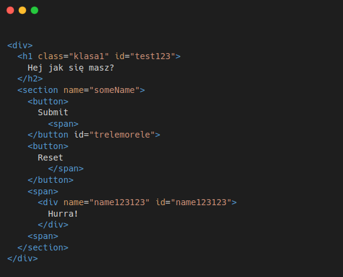

Pytanie/a ogólne
Opisz typowy proces od momentu wpisania adresu URL i kliknięcia
enter do momentu zobaczenia strony w przeglądarce
URL > enter click > browser sends request > DNS server > target
server > grabbing files > response > handling response by the
browser
Czego się ostatnio nauczyłeś
Nauczyłem się biblioteki XYZ - pomogło mi to w tym, tym i tamtym
Nauczyłem się techniki XYZ - pomogło mi to w tym, tym i tamtym
Nauczyłem się jak robić walidację danych przed wysłaniem danych na
serwer przy pomocy biblioteki do walidacji object schem - biblioteka
nazywa się yup
W jaki sposób się uczysz web developmentu?
W moim zestawie do uczenia się o web devie jest znajduje się źródeł:
- Udemy - kurs XYZ
- Kanał na YT - nazwa kanału XYZ
- Książka XYZ
- Pracuje nad projektem XYZ
Pytanie/a HTML
Czym jest HTML
Jakie znasz semantyczne tagi HTML i do czego służą? Po co w ogóle
jest semantyka w HTMLu?
Czym są i jakie znasz atrybuty HTMLowe?
Jakie znasz rodzaje inputów/kontrolek w HTMLu?
Jaka jest różnica między checkboxem a radio buttonem?
Czy można stworzyć elementy HTML w innym miejscu niż w pliku z
rozszerzeniem .html ?
Znajdź błędy HTML-owe w snippecie poniżej
5 błędów

Pytanie/a CSS
Co to jest CSS
Czym jest selector CSS?
Czym są i czy używałeś Flexboxa lub Grida? Jakie są różnice?
Jakie znasz jednostki w CSS?
Do czego służy właściwość position? Jakie znasz możliwe wartości?
Co to model pudełkowy/box-model?
Co to jest CSS specificity?
Pytanie/a JS
Co to jest JS
Czym są słowa let, const, var jakie są różnice/cechy
Jakie są typy danych w JS?
Czy porównanie == i === się różnią?
Jakie znasz wartości truthy i falsy?
Co to jest hoisting?
Jakie znasz rodzaje funkcji w JS i czym się różnią?
Co to jest asynchroniczność? I jak sobie z nią radzić?
Czy w JS są klasy?
Wymień znane Ci pętle w JS?
Wymień znane Ci metody dostępne na tablicach?
Jakie znasz sposoby na komunikacje frontendu z backendem?
Co to jest HTTP?
Czym jest request i response HTTP?
Jakie znasz meotdy HTTP?
Jakie znasz statusy responsu HTTP?
Rozwiń skrót DOM i opisz krótko ten temat?
Czym jest delegacje zdarzeń/event delegation?
Co to jest NodeJS?
⭐ Czym jest event loop?
Pytanie/a React
Co to jest React?
Dlaczego React?
Co to jest komponent?
Czym jest stan komponentu?
Czym są propsy?
Czym są hooki? Wymień i opisz kilka.
Czym są hooki można wywoływać poza komponentem Reactowym?
Pytanie/a Git
Co to jest GIT?
Co to jest GitHub?
Co to jest repozytorium Gitowe?
Jakie znasz komendy GITowe? Opisz wymienione
Jak do tej pory pracowałeś/aś z gitem?
Czy da się cofnać/zauktualizować stworzonego commita?
Czym jest branch?
Jak się przełaczyć na inną branch?
Jak stworzyć nową branch?
Czym jest merge?
Czym jest merge-request/pull-request?